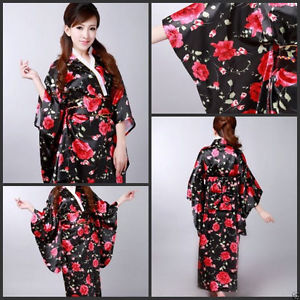
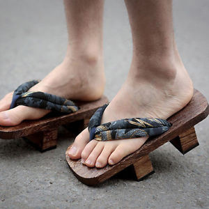
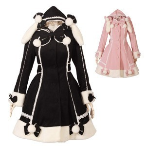
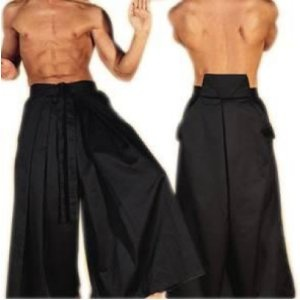
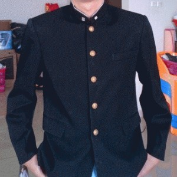
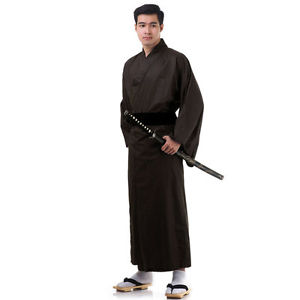

Cultura japonesa
Vestimenta
Tradicional
Moderna
"Lolitas"
"Cosplay"
Tradiciones
Gastronomía
Arte
Cultura popular
Deporte
Medios de comunicación
Religión
Festivales
"Seijin shiki"
"Hinamatsuri"
"Hanami"
"Tanabata"
"Shichi-Go-San"
"Ōmisoka"
Quiz
Chat
¿Que has aprendido sobre Japón?
Canal rss
Introduzca su nombre:
¿A que continente pertenece Japón?
Asia
África
Europa
América
¿Cuál es el sello oficial de Japón?
¿Cómo se conoce a Japón?
La Tierra del Sol Creciente
La Tierra del Sol Poniente
La Tierra del Sol Naciente
La Tierra del Sol Saliente
¿Cuál de estas imágenes son prendas tradicionales japonesas?






¿Que son las "lolitas"?
Subcultura japonesa que mezcla corrientes juveniles con estéticas de la edad media y de siglos pasados.
Subcultura popular que utilizan sobretodo las mujeres, donde se visten como niñas menores de edad.
Cultura japonesa extendida donde las mujeres utilizan ropa relacionada con épocas pasadas y simulando a niñas.
Subcultura japonesa que mezcla corrientes juveniles con vestimentas de la aristocracia del siglo pasado o estilos similares.
¿En que consiste el "Cosplay"?
Se trata de vestirse o disfrazarse de manera similar a un personaje ficticio de alguna serie, película o videojuego.
Se trata de ataviarse con accesorios que lleva un personaje ficticio de alguna serie, película o videojuego.
Se trata de vestirse y actuar, de manera que parezca una especie de juego, como un personaje ficticio de series, películas o videojuegos.
Se trata de actuar, realizando un papel, como un personaje ficticio de una serie, película o videojuego.
¿Cuál de estos platos son típicos de Japón?
Ramen
Chow Mein
Won Ton
Onigiri
Nam Prik Pao
Shushi
Ped Dang
Bento
Takoyaki
Gohan
¿Cuáles de estas frases son verdaderas en relación al arte japonés?
El Ukiyo-e es sobre lienzo y la pintura japonesa solo sobre piezas de madera.
El Ikebana consiste en el arte con plantas y la pintura japonesa sobre lienzo.
El Ukiyo-e se hace exclusivamente sobre piezas de madera, mientras que la pintura japonesa no.
Los tres son un tipo de arte japonés(Ikebana, pintura y Ukiyo-e).
La pintura japonesa es más moderna que el Ukiyo-e.
El Ikebana y el Ukiyo-e ya no se realizan en la actualidad, mientras que la pintura japonesa si.
¿Como se llama el estudio de anime más famoso de Japón?
Estudios Gibli
Estudios Henzo
Estudios Ghibli
Estudios Giblhi
¿Cuáles de estas religiones se practican en Japón?
Shinto
Judaísmo
Yoruba
Cristianismo
Fe Bahá'í
Jainismo
Budismo
Neopaganismo
¿En que consiste el Hanami?
Celebran la caída de las flores de cerezo.
Se realizan excursiones y picnics por la caída de las flores de cerezo.
Se celebra en otoño, por la caída de las flores.
Recogen flores de cerezo para que den buena suerte.
¿En honor a quién se realiza el Tanabata?
Adela y Altair
Vega y Altaifa
Vega y Altair
Vegoña y Alfonso
Ordena los festivales según las fechas:
3 de Marzo:
--------------
Tanabata
Sheijin Shiki
Ōmisoka
Hanami
Hinamatsuri
Shichi-Go-San
1 de abril y 2 de abril:
--------------
Ōmisoka
Hinamatsuri
Hanami
Sheijin Shiki
Tanabata
Shichi-Go-San
Abril:
--------------
Ōmisoka
Sheijin Shiki
Shichi-Go-San
Hinamatsuri
Tanabata
Hanami
7 de Julio:
--------------
Tanabata
Hinamatsuri
Shichi-Go-San
Hanami
Sheijin Shiki
Ōmisoka
15 de Noviembre:
--------------
Tanabata
Hinamatsuri
Sheijin Shiki
Shichi-Go-San
Hanami
Ōmisoka
31 de Diciembre:
--------------
Shichi-Go-San
Hanami
Hinamatsuri
Ōmisoka
Sheijin Shiki
Tanabata
Nombre
Pregunta 1
Pregunta 2
Pregunta 3
Pregunta 4
Pregunta 5
Pregunta 6
Pregunta 7
Pregunta 8
Pregunta 9
Pregunta 10
Pregunta 11
Pregunta 12
Pregunta 13
Pregunta 14
Pregunta 15
Pregunta 16
Pregunta 17
Pregunta 18